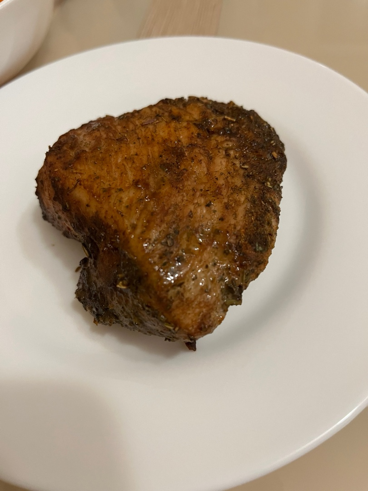

СОЧНАЯ ИНДЕЙКА В СОЕВОМ СОУСЕ
КБЖУ на 1 порцию - 370/40/8/39
Время приготовления - 45 минут
Сложность - легко
ИНГРИДИЕНТЫ НА 1 ПОРЦИЮ:
- Филе индейки - 150гр
- Соевый соус - 30мл
- Специи - перец, базилик,чеснок
СПОСОБ ПРИГОТОВЛЕНИЯ:
Шаг 1:
Филе индейки слегка отбиваем.
Шаг 2:
В соевый соус добавляем специи, размешивем.
Шаг 3:
Филе кладём в соевый соус, оставляем на 20-30 минут мариноваться.
Шаг 4:
Индейку заворачиваем в фольгу, слегка приоткрываем сверху.
Шаг 5:
Отправляем запекать в разогретую до 180 градусов в духовку на 25 минут.
К индейке можно в качестве гарнира подавать картофельное пюре либо макароны. ПРИЯТНОГО АППЕТИТА!